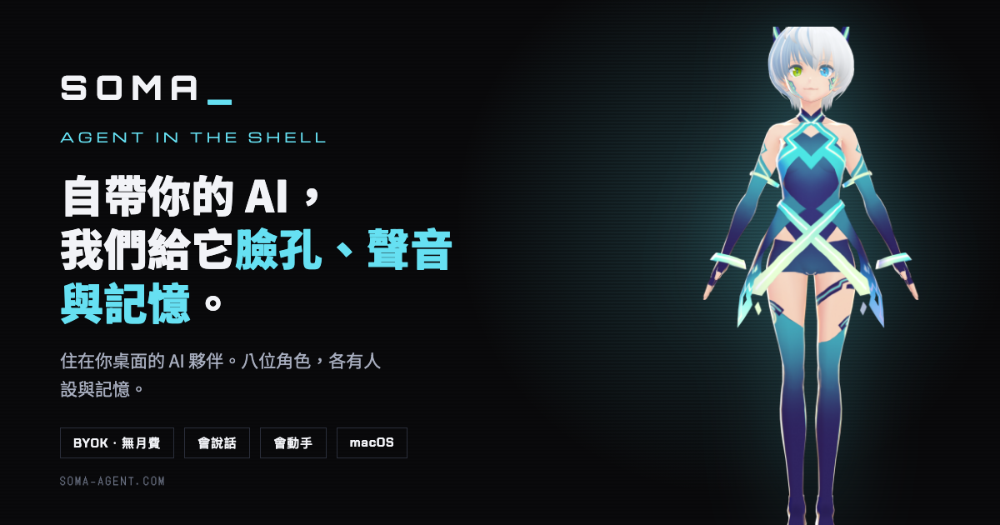
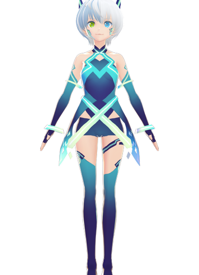
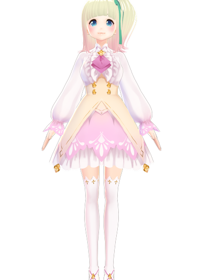
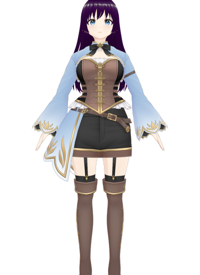
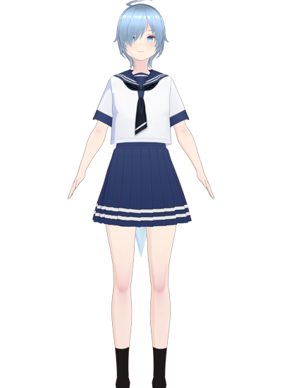
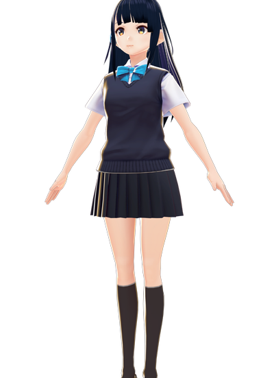
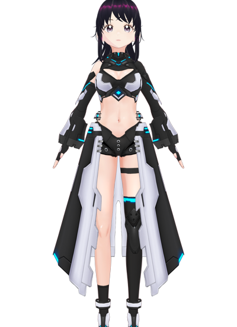
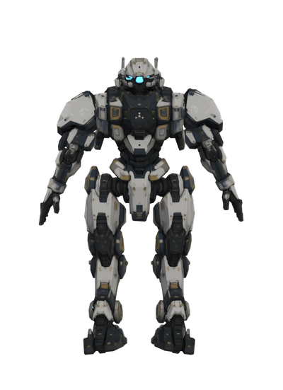
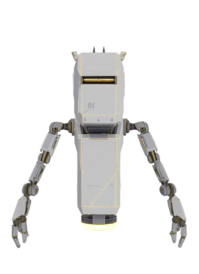

Soma Agent 是一套執行在 macOS 的桌面 AI 夥伴，把大型語言模型（LLM）、語音辨識（ASR）、文字轉語音（TTS）、長期記憶與 VRM／Live2D 角色整合在同一個原生應用程式裡。使用者可以打字或按住熱鍵說話，角色會用自己的聲線回應、同步嘴型與表情，並且記得先前聊過的內容。開發者將它定位為 Agent in the Shell——你自己帶來的 AI 是 ghost，Soma 提供的是那具軀殼：形象、聲音、記憶，以及操作桌面的能力。
它和一般 ChatGPT 語音對話或 Character AI 類服務最大的差異，在於 Soma Agent 完全不轉賣 AI 額度。使用者填入自己的 API key 直接連到模型供應商，用多少付多少給對方，對話內容不經過開發者的伺服器；官方的伺服器只負責驗證序號這一件事。再加上角色外觀、人格、聲線與回應語言都能逐一設定，因此它比較接近「把你選的模型裝進一個有身體的殼」的基礎工具，而不是一個已經幫你決定好一切的訂閱服務。
這個專案最早的起點，是一套嵌在網站上的 Live2D 語音客服。開發過程中發現「有形象、會說話、記得你」這三件事湊在一起時，體驗和純文字聊天框完全不同，於是把它從瀏覽器裡搬出來，做成常駐桌面的原生應用。隨著功能增加，定位也從單一助理延伸到多角色的 Personal AI Companion——內建八位角色，各自擁有獨立的人格、記憶與聲音。
基本互動流程可以理解成：
不過 Soma Agent 並不只處理對話。在進階版中，AI 可以呼叫桌面工具：開啟網頁與應用程式、讀取網頁內容、依日期整理檔案、控制音樂播放。任何會動到檔案的操作都會先跳出確認框，按下允許之後才執行。這讓它比單純的語音助理更接近一個「有眼睛、有聲音、也有手」的桌面代理人。
目前的主要能力
- VRM 與 Live2D 雙引擎的桌面角色，透明背景、常駐置頂、可拖曳
- 八位內建角色，各自獨立的人格、記憶、聲線與外觀設定
- 長期記憶：角色會記住聊過的重點並逐步整理，可隨時查看或清除
- Azure 神經語音，中文、日文、韓文、英文多語聲線
- 按住右 Option 說話的語音輸入，放開即送出
- 雙角色對談（加購）：兩個角色就給定主題自己聊，你可以旁觀或隨時插話變成三方對話
- 桌面工具執行（進階版）：開網頁、讀網頁、整理檔案、控制音樂
- 匯入自己合法取得的 VRM 或 Live2D 模型，不受版本限制
- 回應語言與語音語言可分開設定，例如用中文聊天、讓角色以日文發音
- 介面五語：繁體中文、簡體中文、英文、日文、韓文
- 完全 BYOK，支援 Anthropic、OpenAI、Google Gemini 與本機 Ollama
- 買斷制、無月費，7 天免費試用不需付款資訊
長期記憶：關掉視窗之後還記得你
其中「長期記憶」是實際使用一段時間後最有感的一項。多數 AI 桌寵在關掉視窗後就把一切忘光，每次都要重新自我介紹；Soma 的每個角色各自累積記憶，你跟這隻聊的事，那隻並不知道。
開發過程中曾經踩到一個值得一提的坑：模型偶爾產生的錯誤資訊會被記憶萃取寫進長期記憶，下次讀出來當成事實使用，等於幻覺自我固化。因此「可以查看與清除記憶」不是加分功能，而是必要設計。
桌面工具：把「說」變成「做」
跟角色說「幫我把記憶卡昨天拍的照片複製到雲端硬碟」，它會實際去列資料夾、比對日期、建立目標資料夾並複製檔案。
這條路徑早期版本曾出現「動嘴不動手」的問題——模型回報已完成，實際上一個檔案都沒動。根因是讓 AI 自己逐步協調多個步驟時，它會在中途認為差不多了就收尾。最後的解法是把整段流程包成單一個 Rust 指令，AI 只負責呼叫一次，多步協調交給程式而非模型。
安全邊界則放在 Rust 層而不是介面層。可讀與可寫的路徑各有白名單，路徑會先 canonicalize 解開符號連結與相對路徑再比對，前端的確認框只是使用者體驗，真正的守門在後端。API key 存放在本機的設定檔（權限 600），只有 Rust 端讀得到，不會進入網頁層、也不會傳給開發者。
雙角色對談：讓兩個角色自己聊
給定一個主題之後，兩個角色會就該主題自行往返討論，使用者可以純粹旁觀，也可以隨時打字插話，讓下一個角色轉過來回應你。
這件事的技術難點不在對話本身而在成本：實測一場 36 分鐘的對談，輸入 token 會從 826 一路線性攀升到每輪 12,783，其中 96% 的成本都在 input。後來加上只送最近十筆發言的滑動窗口，成本才封頂。也因為長時間對談確實耗用額度，這項功能只在買斷版提供、不進訂閱制。
八位角色，各自獨立的人格與記憶

VITA
VICTORIA
LUSA
REMI
YUNA
ALICE
COLOSSUS
HOVERBOT角色客製化不只是換一張圖。每位角色擁有獨立的人格設定、記憶、聲線、回應語言與外觀，切換角色時整組設定一併切換。內建角色中，機械型的 Colossus 沒有嘴，改用胸口燈光對嘴——講話時光條跟著音節亮。
使用者也可以匯入自己的 VRM 或 Live2D 模型；匯入 Live2D 時程式會檢查貼圖格式，調色盤（indexed）格式的貼圖會讓角色永遠卡在載入中，因此匯入時會自動轉為 RGBA，轉不成的則明確擋下並說明原因，而不是讓使用者對著轉圈圈猜。
模型選擇：不綁定任何一家
Soma Agent 目前支援 Anthropic（Claude）、OpenAI、Google Gemini，以及透過 OpenAI 相容介面連接的本機 Ollama。使用者可以依成本、隱私與模型能力自行選擇，也能在下拉選單之外手動輸入模型 ID——各家模型名稱汰換得很快，寫死清單很快就會過時。
平台與安裝
目前首波支援 macOS，Intel 與 Apple Silicon 都可執行，安裝檔已完成 Developer ID 簽章與 Apple 公證，下載後拖進應用程式即可開啟，不需要處理隔離屬性或安裝任何執行環境。桌面端以 Tauri 打包（Rust 後端搭配系統 WebView），因此常駐時的記憶體占用低於 Electron 方案。
兩種使用路線
從實際使用情境來看，Soma Agent 可以走兩條路線。第一種是桌面助理：讓角色待在螢幕角落，隨時查東西、整理檔案、開網頁，需要時才叫它。第二種是陪伴型 Companion：讓角色記住你的偏好與近況，或啟用雙角色模式讓兩位角色自己聊天，當成背景的 AI podcast。
它和開源自架方案的差異也在這裡。開源專案（例如 Open-LLM-VTuber）把最大的控制權交給使用者——可以完全離線執行、自由替換 ASR 與 TTS 元件、跨三大作業系統，代價是需要自行安裝 Python 環境與設定各項服務。Soma Agent 則選擇了另一端：開箱即用的簽章安裝檔、內建授權乾淨的八位角色、五語介面與商業支援，代價是需要付費、目前僅支援 macOS，而且不提供完全離線的語音方案（語音仍走 Azure，只有 LLM 那一段可以用 Ollama 完全在本機執行）。
購買前值得知道的限制
- 僅支援 macOS。Windows 與 Linux 版本在規劃中，Mac App Store 上架也在路上，但目前都還沒有時程承諾。
- 沒有語音打斷。目前是角色講完一段之後才進入下一輪，無法在它說話途中插話。這會影響長回應時的對話節奏。
- 沒有視覺感知。角色不會讀取攝影機或螢幕內容；圖片與 PDF 需要使用者主動附加，且只有 Anthropic 模型能讀。
- 角色不會主動開口。待機時有隨機的表情與動作，但不會自行發起話題。
- 語音需要另外準備 Azure 金鑰。沒有設定時會退回系統語音，音質差距明顯。
總結
整體而言，Soma Agent 真正有辨識度的地方，不只是「讓 LLM 配上一個 3D 角色」，而是把長期記憶、多角色人格、雙角色對談與桌面工具執行串成一套可以每天使用的原生應用，同時把模型選擇權與資料完全留在使用者手上。對想要一個記得住你、能陪你聊天、必要時還能替你動手處理桌面雜事的 AI 夥伴，而且不希望每個月付訂閱費或把對話交給第三方伺服器的使用者而言，它提供了一條與開源自架方案不同、但同樣把控制權交回使用者的路徑。
- 售價
- 買斷制。基礎版 NT$599、進階版 NT$899（含桌面工具與兩位額外角色）、雙角色對談加購 NT$399。無月費。
- 試用
- 7 天免費，不需付款資訊。到期後角色與對話記憶都保留。
- 系統需求
- macOS，Intel 或 Apple Silicon。已完成簽章與公證。
- AI 費用
- BYOK，自行付費給模型供應商；使用本機 Ollama 則完全免費。